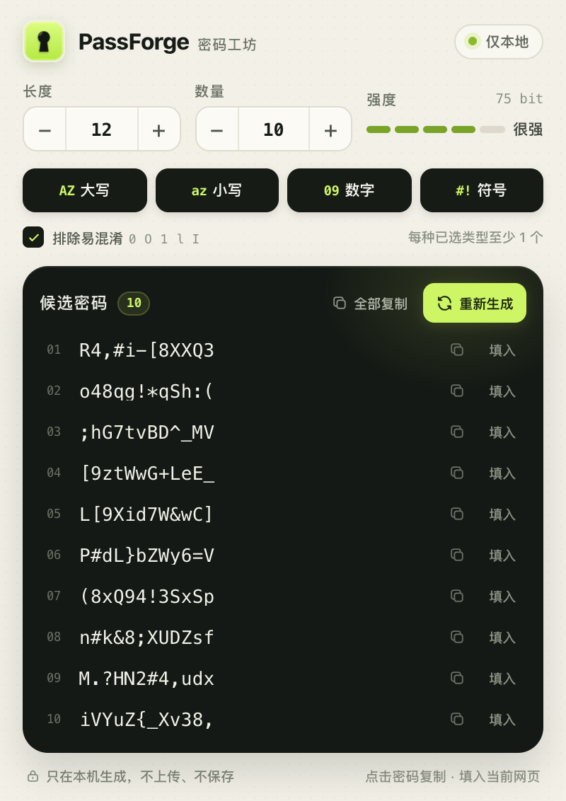

一次 10 个候选
默认 10 个 × 12 位，大小写、数字和符号齐全。长度 8–64、数量 1–20， 四种字符类型可独立开关。
本地优先 · 开源 · Chrome 扩展
打开 PassForge，直接得到 10 个 12 位候选密码。长度、数量和字符类型都能调整， 支持一键复制、填入网页，或在密码框上右键直接生成。

Features
为频繁注册、又不想每次向 AI 描述一遍需求的场景而做。
默认 10 个 × 12 位，大小写、数字和符号齐全。长度 8–64、数量 1–20， 四种字符类型可独立开关。
在密码框上点右键，选择「自动生成密码」。按当前设置生成并填入， 自动同步确认密码框。
使用浏览器加密随机源生成，不联网、不上传、不保存密码。 没有全站访问权限，也没有分析或追踪。
Install
目前通过 GitHub Releases 分发，以开发者模式加载；源码完全公开，可自行审计。
已验证 Chrome 151+，同样适用于 Edge、Brave 等 Chromium 浏览器。
passforge-1.1.0.zip，解压到固定目录。
chrome://extensions，打开右上角「开发者模式」。
无服务器、无追踪、无密码历史。设置之外的任何数据都不会被保留。